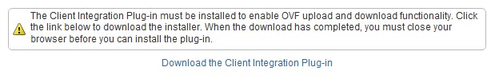

Fix for customers unable to upload and download vApps or catalog items
This article is divided into two sections: A Windows and MAC set of instructions:
Fix for customers unable to upload and download vApps of catalog items in Windows
The client integration plugin requires to be updated on the client machine performing the upload/download.
Step 1
Close all internet browsers.
Step 2
Go to control panel and uninstall: VMware Client Integration Plug-in 5.5.0
Important
Remove the file .csp_ovftool_settings.js located in C:\users\<username>
Step 3
Connect to the UKCloud Portal and log in to vCloud Director. Right click the vApp and select download, the following screen will appear:

Download and install this plugin.
Step 4
Note
Close all browsers prior to install.
Once installed, log back in to the Portal.
You should now find you are able to initialise a vApp download.
Note
This is the same fix for catalog item upload/download.
Fix for customers unable to upload and download vApps of catalog items in Mac OS
Step 1
Shut down all browsers.
Step 2
Remove the installed plugin with this command:
sudo rm -rf '/Library/Internet Plug-Ins/VMwareClientSupportPlugin55.plugin
Step 3
Remove local settings created by the plugin:
rm ~/.csp_ovftool_settings.js
Step 4
Re-install the plugin.
Step 5
Ensure the plugin is set to "Always activate" in about:addons.
Note
This plugin only works in Firefox. It does not work in Safari, and no longer works in Chrome as it requires NPAPI extensions.
Feedback
If you have any comments on this document or any other aspect of your UKCloud experience, send them to products@ukcloud.com.